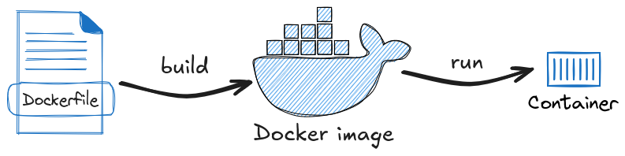
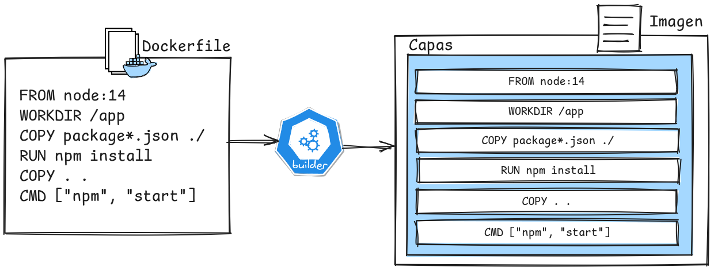
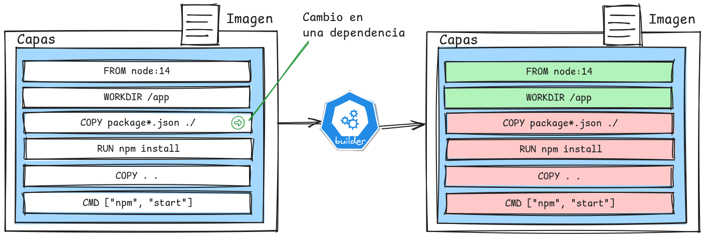

Fundamentos y usos prácticos de Docker
Clase 3 : Imágenes y Dockerfile
Temas de clase 3
Imágenes y Dockerfiles
Imágenes y Dockerfile:
Conceptos de Dockerfile
¿Qué es un Dockerfile?
Un Dockerfile es un archivo de texto plano, llamado simplemente Dockerfile que contiene una serie de instrucciones que se ejecutan de manera secuencial para construir una imagen de Docker. Cada línea del Dockerfile corresponde a una instrucción específica que define cómo se debe configurar el entorno del contenedor que se creará a partir de la imagen.
Propósito del Dockerfile
- Automatización: Dockerfile permite automatizar la construcción de imágenes, lo que es esencial para asegurar la consistencia entre los distintos entornos. Una vez que el Dockerfile está definido, cualquiera puede generar la misma imagen simplemente ejecutando un comando.
- Portabilidad: Con Dockerfile, podemos empaquetar la aplicación junto con todas sus dependencias en un proceso automatizado, garantizando que funcionará de la misma manera en cualquier sistema que soporte Docker y por lo tanto ayuda a hacer el entorno de desarrollo reproducible. También, al generar con un proceso automatizado la imágen, evitamos el uso intensivo de las registry para almacenar imágenes.
Dockerfile es una parte fundamental del ecosistema Docker. Junto con Docker Hub y las imágenes preexistentes, proporciona las herramientas necesarias para la construcción y despliegue de aplicaciones en contenedores.
Ventajas de Dockerfile
- Consistencia: Un Dockerfile asegura que el entorno en el que se ejecuta tu aplicación es siempre el mismo, independientemente de dónde se despliegue.
- Versionado: Al igual que el código fuente, los Dockerfiles pueden versionarse y almacenarse en sistemas de control de versiones como Git.
- Eficiencia: A través de la reutilización de capas y la minimización de dependencias, las imágenes pueden ser construidas rápidamente y con un uso mínimo de recursos.
- Escalabilidad:* Al definir cómo se construye una imagen, puedes escalar fácilmente tu aplicación en diferentes entornos y con diferentes configuraciones sin cambiar el código base.
Ejemplo de dockerfile
Con este archivo Dockerfile podríamos correr una app simple escrita en Nodejs.
# Usa la imagen oficial de Node.js como base
FROM node:14
# Establece el directorio de trabajo en el contenedor
WORKDIR /app
# Copia el archivo package.json y package-lock.json (si existe)
COPY package*.json ./
# Instala las dependencias del proyecto
RUN npm install
# Copia el resto del código de la aplicación al contenedor
COPY . .
# Expone el puerto en el que la aplicación estará escuchando
EXPOSE 3000
# Comando para ejecutar la aplicación
CMD ["npm", "start"]
Un Dockerfile se compone por instrucciones (FROM, COPY, etc). Cada línea formará una capa de la imágen docker. Descargar ejemplo
Dockerfile: estructura básica
Un Dockerfile se compone de varias instrucciones que se ejecutan en secuencia para construir una imagen de Docker. A continuación, las mas comunes:
- FROM: Define la imágen base a partir de la cual se construirá la nueva imagen. Esta es siempre la primera instrucción en un Dockerfile y es obligatoria.
# Ejemplo de FROM
FROM ubuntu:24.04
- WORKDIR: Establece el directorio de trabajo dentro del contenedor. Todas las instrucciones posteriores que utilicen rutas relativas se basarán en este directorio.
# Ejemplo de WORKDIR
WORKDIR /usr/src/app
Continúa...
Dockerfile: estructura básica
- RUN: Ejecuta un comando en el contenedor durante la construcción de la imagen. Es comúnmente utilizado para instalar paquetes, configurar el entorno, o realizar cualquier otra tarea necesaria para preparar la aplicación.
# Ejemplo de RUN
RUN apt-get update
RUN apt-get install -y curl
- ENV: Establece variables de entorno dentro del contenedor. Estas variables pueden ser utilizadas por la aplicación en ejecución.
# Ejemplo de ENV
ENV NODE_ENV=production
Continúa...
Dockerfile: estructura básica
- COPY y ADD: Ambas instrucciones se utilizan para copiar archivos desde el host al contenedor, pero con algunas diferencias:
COPY . /usr/src/app
ADD https://ejemplo.com/archivo.tar.gz /usr/src/app/
- CMD: Especifica el comando por defecto que se ejecutará cuando se inicie un contenedor creado a partir de la imagen.
- Los parámetros son separados por comas.
- Si se proporcionan argumentos en el
docker run, estos sobrescriben el CMD.
CMD ["node", "app.js"]
- ENTRYPOINT: Similar a CMD pero NO es sobrescrito por los argumentos pasados a
docker run
Listado completo de instrucciones en Dockerfile reference.
Capas de Dockerfile
Las capas de imágenes de Docker desempeñan un papel fundamental en la optimización de los procesos de buildeo de imágenes, donde cada instrucción en un Dockerfile representa una capa distinta dentro de la imagen. Comprender cómo funcionan estas capas y su impacto en el almacenamiento en caché de Docker puede mejorar significativamente la eficiencia de la construcción de imágenes de Docker.
Optimización de Capas:
Las imágenes de Docker se construyen en capas, donde cada instrucción en el Dockerfile crea una nueva capa. Para optimizar la construcción de imágenes y reducir su tamaño, es importante agrupar las instrucciones RUN y minimizar las capas innecesarias. Por ejemplo:
RUN apt-get update
RUN apt install -y curl
RUN apt install -y vim
Optimizado:
RUN apt-get update && apt-get install -y curl vim
Caché de construcción
Docker utiliza un sistema de caché para acelerar la construcción de imágenes. Si una capa no ha cambiado, Docker reutiliza la capa en lugar de reconstruirla. Esto hace que el orden de las instrucciones sea muy importante; cambios en las primeras instrucciones pueden invalidar la caché de todas las capas siguientes.
Esto es notorio cuando estamos buildeando imágenes haciendo pruebas. O hacemos un cambio en el código de la app y necesitamos reconstruir la imágen.
Consultas
Construyendo imágenes
Comandos básicos
Construcción de imágenes
La construcción de imágenes es un proceso clave en el uso de Docker, ya que las imágenes son el punto de partida para crear y ejecutar contenedores.
El comando principal utilizado para construir imágenes en Docker esdocker build. Este comando lee las instrucciones de un Dockerfile y produce una imagen a partir de ellas.
docker build [OPTIONS] PATH
PATH: La ubicación del contexto de construcción, es decir, el directorio donde se encuentra el Dockerfile y los archivos necesarios para la construcción.OPTIONS: Opciones adicionales que pueden personalizar el proceso de construcción.
Construcción de imágenes
Supongamos que tenemos un Dockerfile en el directorio actual y queremos construir una imagen llamada mi-app.
docker build -t mi-aplicacion .
-t mi-app: asigna un nombre y una etiqueta (tag) a la imagen creada..: indica que el contexto de construcción es el directorio actual.
Al construir imágenes, es buena práctica usar etiquetas para versionarlas. Esto facilita la gestión y despliegue de diferentes versiones de tu aplicación. Una mejor opción sería:
docker build -t mi-app:v0.1 .
docker build -t mi-app:latest .
Opciones comunes de docker build
-f ARCHIVO: Especifica un Dockerfile diferente al dockerfile estándar.
docker build -f Dockerfile.dev -t mi-app-dev .
--no-cache: Evita el uso de la caché en la construcción de la imagen. Útil cuando necesitas asegurarte de que todas las capas se reconstruyan desde cero, por ejemplo, después de un cambio en las dependencias.
docker build --no-cache -t mi-aplicacion:v0.1 .
Recomendaciones
- Evitar instrucciones redundantes: Es importante no duplicar instrucciones o comandos que no sean necesarios, lo que podría llevar a la creación de capas adicionales e innecesarias.
- Utilizar imágenes livianas: Seleccionar imágenes base ligeras basadas en Alpine o Debian-slim puede reducir significativamente el tamaño de la imagen final y acelerar los tiempos de construcción y despliegue.
- Usar imágenes ya construidas con las dependencias incluídas: Siempre que sea posible, usar imágenes que tengan los paquetes y dependencias necesarios.
- No incluir en las imágenes información sensible: Evita incluir secretos, contraseñas o claves privadas directamente en el Dockerfile. Utiliza variables de entorno o archivos de configuración que puedan ser montados en el contenedor en tiempo de ejecución.
- Minimizar los archivos copiados al contenedor: Es muy útil el uso del archivo
.dockerignore. Similar al .gitignore que evita que se copien dichos archivos o directorios al contenedor. - Uso de multi-stage builds: Usa la técnica de construcción en múltiples etapas para crear imágenes más ligeras. La primera etapa se utiliza para compilar la aplicación, y la última etapa solo contiene los artefactos necesarios para ejecutar la aplicación. Lo veremos mas adelante en el curso.